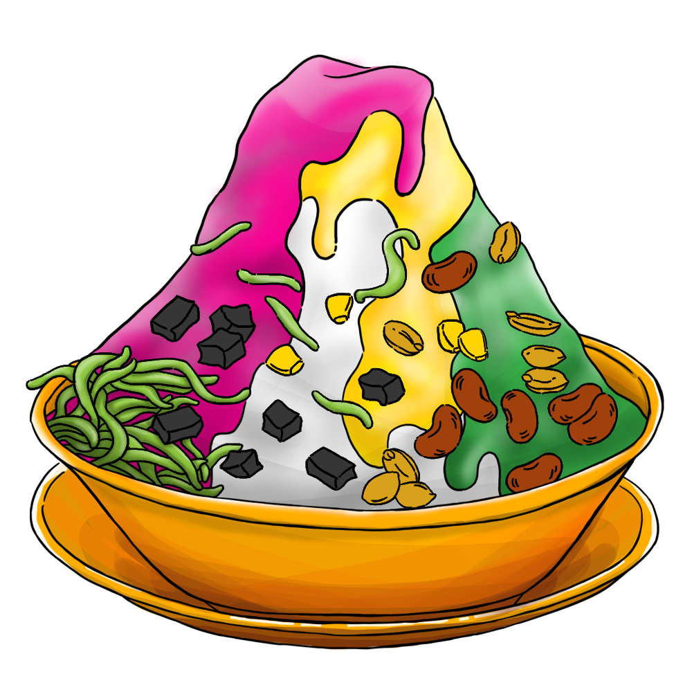
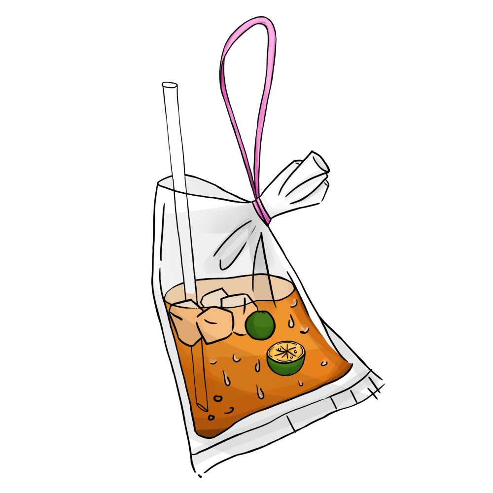
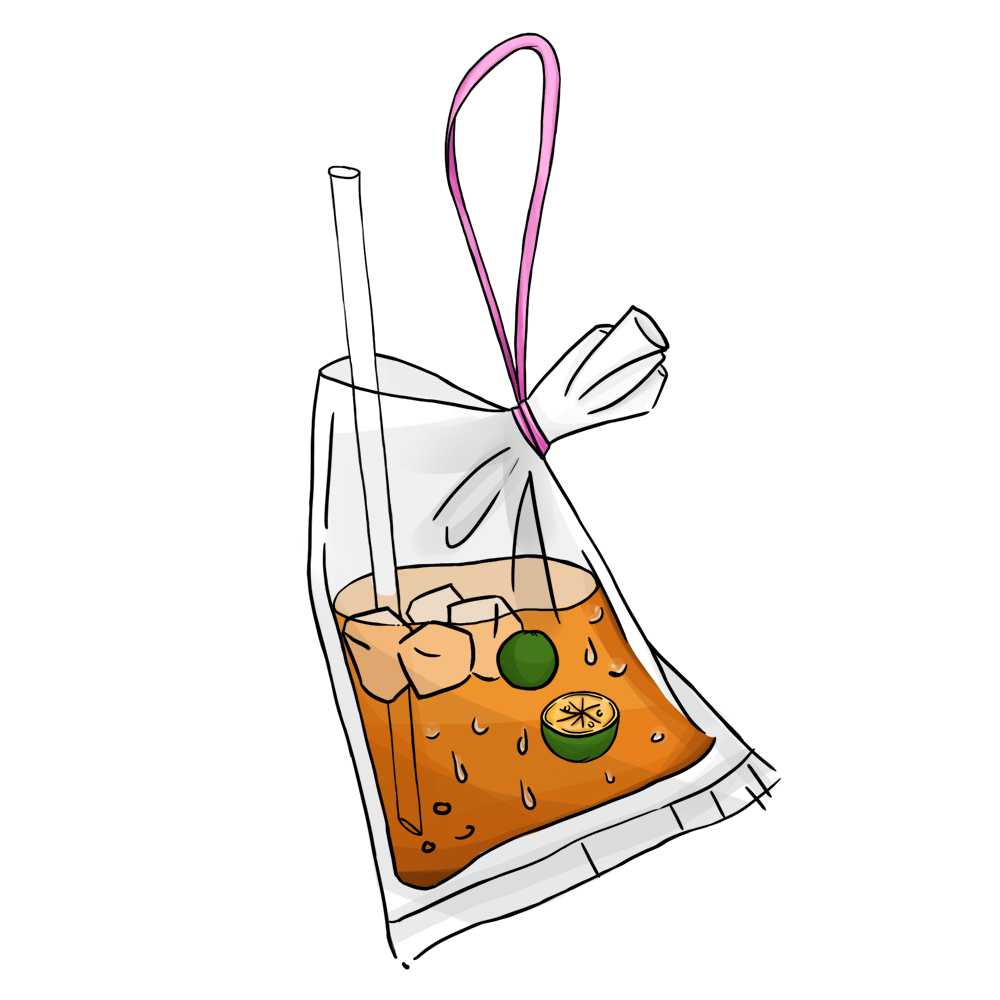

Day 1
Breakfast
Malaysian
- Nasi Lemak (Malay fragrant rice)
- Mee Siam (Thai style vermicelli, spicy)
- Mee Hoon Goreng (Fried vermicelli)
- Mee Goreng (Friend yellow noodle)
Vegetarian
- Mee Goreng (Friend yellow noodle)
- Mee Hoon Goreng (Fried vermicelli)
Sweet Soups
- Red Dates, Snow Fungus, Peach Gum
- Green Bean
Lunch
Malaysian
- Nasi Kerabu Ayam Percik (Blue-colored herbs rice with chicken)
- Nasi Dagang Ayam Gulai (Coconut milk steam rice with curry chicken)
- Nasi Ulam Ikan Kembung (Mixed herbs rice with chub mackerels fish)
Western
- Burger Turkeynizer (Chicken)
- Burger Beaconizer (Beef)
Indian
- Ayam Biryani (Biryani rice with chicken)
- Ayam Tandoori Naan (Flatbread with tandoori chicken)
- Kambing Biryani (Biryani rice with mutton)
Fusion
- Honey Chicken Poke Bowl
- Shoyu Salmon Poke Bowl
Vegetarian
- Burger Portabello
- Tofu Poke Bowl
- Vegetable Naan
- Vegetable Biryani
Drinks
- Fragrance Coconut
- Various Boba Tea & Tea
Teatime
Handmade Malaysian Specialties
- Nyonya Kuih & Pastries
- Tea & Coffee

 

Day 2
Breakfast
Malaysian
- Nasi Lemak (Malay fragrant rice)
- Mee Siam (Thai style vermicelli, spicy)
- Mee Hoon Goreng (Fried vermicelli)
- Mee Goreng (Friend yellow noodle)
Vegetarian
- Mee Goreng (Friend yellow noodle)
- Mee Hoon Goreng (Fried vermicelli)
Sweet Soups
- Bubur Cha Cha (Yam, Sweet Potatoes)
- Dried Beancurb, Sweet Barley, Ginko Nuts
Lunch
Malaysian
- Nasi Kerabu Ayam Percik (Blue-colored herbs rice with chicken)
- Nasi Kukus Ayam Berempah (Steam rice with gravy chicken)
- Nasi Dagang Ikan Tongkol (Coconut milk steam rice with curry mackerel tuna fish)
Western
- Burger Ayam Cajun Cheese (Chicken)
- Burger Smokynizer (Beef)
Indian
- Ayam Biryani (Biryani rice with chicken)
- Ayam Tandoori Naan (Flatbread with tandoori chicken)
- Kambing Biryani (Biryani rice with mutton)
Fusion
- Honey Chicken Poke Bowl
- Shoyu Tuna Poke Bowl
Vegetarian
- Burger Portabello
- Tofu Poke Bowl
- Vegetable Naan
- Vegetable Biryani
Drinks
- Cendol (Green rice flour jelly, coconut milk and palm sugar syrup)
- Honey Lemon
- Calamansi (Sour plum juice)
Lunch Special
Kajang Satay
- Satay Ayam (Chicken skewer)
- Stay Daging (Beef skewer)
- Satay Perut (Beef brisket skewer)